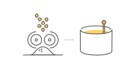
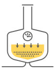

MALTEADO

Durante el malteado los granos de cereal, normalmente de cebada, atraviesan un proceso de germinación controlada con el fin de activar las enzimas presentes en el grano, que luego serán necesarias durante la maceración. Dependiendo del grado de tostado obtenido durante el malteo, conseguiremos maltas más claras u oscuras, que aportarán el color de la cerveza.
MOLIENDA Y MACERACIÓN

Una vez hemos molido el grano de cereal, es hora de mezclarlo con agua para preparar el mosto cervecero. El agua es el ingrediente mayoritario representando entre el 85%-90% del contenido de la cerveza final.
Para el proceso de macerado, la malta se mezcla con el agua a diferentes tiempos y temperaturas, produciendo las transformaciones necesarias para convertir el almidón en azúcares fermentables.
FILTRACIÓN DEL MOSTO

Tras la maceración, se separa el mosto líquido de los restos de malta. Para ello filtramos el mosto a través de una cuba filtro o de un filtro prensa, en ambos casos se separa el líquido del sólido, a este último le llamamos bagazo y normalmente es reaprovechado para alimentación animal.
COCCIÓN

El mosto se lleva a ebullición con el objetivo de aportar amargor y aroma presentes en el lúpulo. Además, durante esta etapa se esteriliza el mosto, se coagulan proteínas y se evaporan aromas indeseables. Normalmente este proceso dura en torno a una hora o más, dependiendo del estilo de cerveza que se esté elaborando. Posteriormente el mosto final es sometido a una especie de centrifugado o whirpool.
FERMENTACIÓN DE LA CERVEZA

Finalmente llegó el momento de enfriar y airear el mosto para luego sembrar la levadura. Durante la fermentación se transforman los azúcares fermentables en alcohol y CO2, al tiempo que se generan una gran variedad de compuestos, muchos de los cuales contribuyen a darle los aromas característicos tan populares de la cerveza. Usualmente en el proceso cervecero se utilizan dos grandes familias de levaduras: lager y ale. Este proceso se desarrolla en tanques de fermentación que en ocasiones son conocidos como fermentadores.
MADURACIÓN
El líquido resultante requiere de un período de maduración, donde la cerveza es sometida a bajas temperaturas para que el sabor y los aromas logrados durante el proceso se estabilicen y se consiga el justo balance entre los diferentes matices. Este proceso puede durar desde unas pocas semanas hasta varios meses, dependiendo del estilo de cerveza que se esté elaborando.
ENVASADO
Generalmente al terminar la maduración la cerveza es sometida a un proceso de filtración para separar pequeñas partículas de levadura y compuestos que aún se encuentran en suspensión. Una vez filtrada se obtiene la cerveza brillante, la cual se envasa en diferentes formatos para su consumo y en muchos casos se pasteuriza para luego poner a disposición de los Cervecistas, que sólo tendrán que preocuparse de abrir, servir y disfrutar.